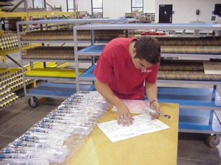

|
Quality and Inspection OEM Logistics believes the quality of services provided is a top priority. Our intense focus on quality is what differentiates us from other suppliers of supply chain and logistics services and enhances overall value to our customers. We begin by taking our customer’s internal procedures, simplifying them, and incorporating a fully accountable process that focuses on delivering a value-based quality product. OEM Logistics is certified to ISO 9002 and has in place fully documented procedures to ensure process control, structure, and total accountability. This process control, coupled with our procedures that contain built-in checks and balances have been the backbone to our excellent quality track record and the resulting customer satisfaction.
 OEM
has an outstanding staff of quality personnel consisting of Production Floor
Inspectors, FAA approved Organizational Designated Airworthiness Representatives
(ODAR), a fully accountable Quality Manager,
5 DNV Certified Internal ISO auditors.
As mentioned, the quality of our services has been the backbone to our
current success and has positioned us well for future growth.
OEM’s executive management team and its associates are committed to
maintaining the level of quality and process control regardless of growth, and
believe our focus on quality the value we offer to our customers, but also
solidifies our competitive advantage within the industry.
Aerospace Logistics, Quality and Assurance ISO9002 Certified |
|